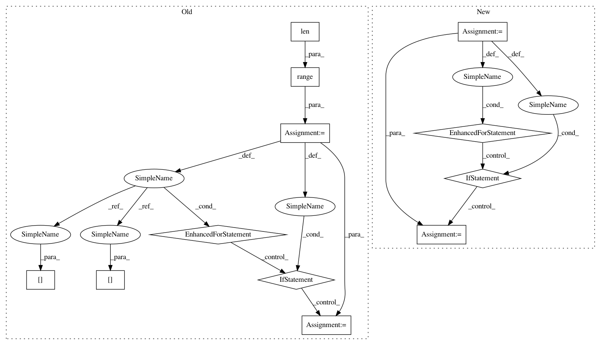

f612f023e0e49c18e8f307a8ba647e02b0fb5cb8,src/python/pants/backend/project_info/tasks/ide_gen.py,IdeGen,map_external_jars,#IdeGen#,294
Before Change
cp_jars = self.copy_jars(binary_jars, external_jar_dir)
cp_source_jars = self.copy_jars(sources_jars, external_source_jar_dir)
cp_javadoc_jars = self.copy_jars(javadoc_jars, external_javadoc_jar_dir)
for i in range(len(cp_jars)):
cp_jar = cp_jars[i]
if i < len(cp_source_jars):
cp_source_jar = cp_source_jars[i]
else:
cp_source_jar = None
if i < len(cp_javadoc_jars):
cp_javadoc_jar = cp_javadoc_jars[i]
else:
cp_javadoc_jar = None
self._project.external_jars.add(ClasspathEntry(cp_jar,
source_jar=cp_source_jar,
javadoc_jar=cp_javadoc_jar))
def execute(self):
Stages IDE project artifacts to a project directory and generates IDE configuration files.
self._prepare_project()
After Change
source_jar=sources_jar,
javadoc_jar=javadoc_jar))
// treat all other jars as binaries
for classifier, jar in entry.iteritems():
if classifier not in {"default", "sources", "javadoc"}:
binary_jar = self.copy_jar(jar, external_jar_dir)
self._project.external_jars.add(ClasspathEntry(binary_jar))
def execute(self):
Stages IDE project artifacts to a project directory and generates IDE configuration files.
self._prepare_project()
In pattern: SUPERPATTERN
Frequency: 3
Non-data size: 12
Instances
Project Name: pantsbuild/pants
Commit Name: f612f023e0e49c18e8f307a8ba647e02b0fb5cb8
Time: 2015-08-11
Author: fedor.korotkov@gmail.com
File Name: src/python/pants/backend/project_info/tasks/ide_gen.py
Class Name: IdeGen
Method Name: map_external_jars
Project Name: mittagessen/kraken
Commit Name: 6e6c12425a787d8c954ce5c31ceed59cdd531001
Time: 2018-05-20
Author: mittagessen@l.unchti.me
File Name: kraken/lib/ctc_decoder.py
Class Name:
Method Name: greedy_decoder
Project Name: openml/openml-python
Commit Name: 33c3a8101efe1cb66599831c03a6b960248a8718
Time: 2016-03-25
Author: feurerm@informatik.uni-freiburg.de
File Name: openml/datasets/functions.py
Class Name:
Method Name: check_datasets_active
Project Name: pantsbuild/pants
Commit Name: f612f023e0e49c18e8f307a8ba647e02b0fb5cb8
Time: 2015-08-11
Author: fedor.korotkov@gmail.com
File Name: src/python/pants/backend/project_info/tasks/ide_gen.py
Class Name: IdeGen
Method Name: map_external_jars